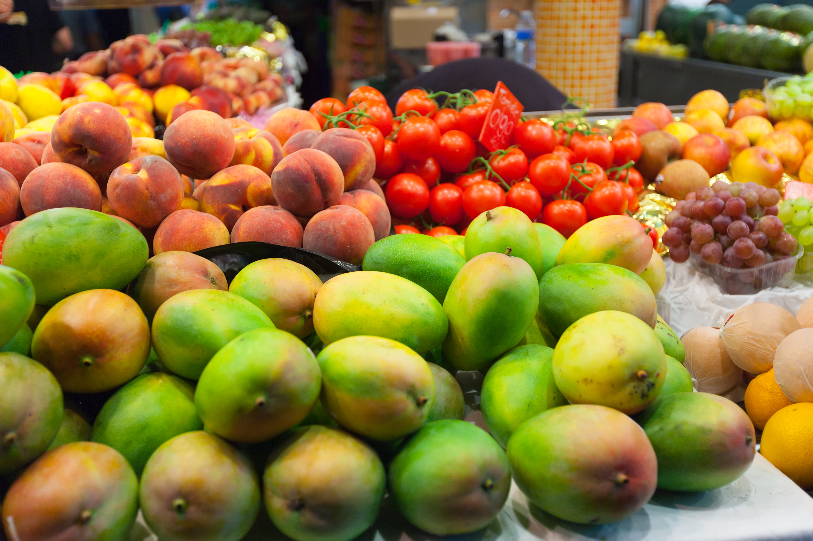
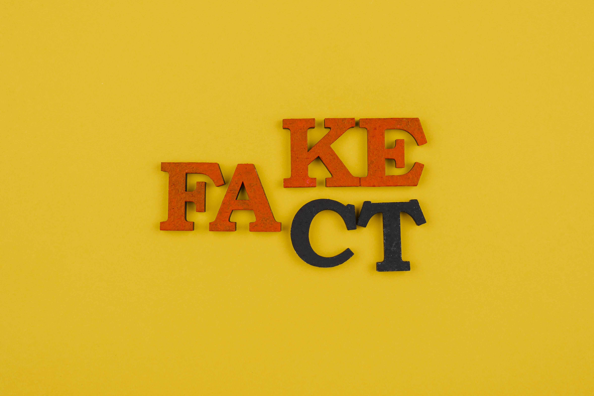

Business
What is the ideal mindset of a succesful businessperson?
Business mindset: a way of thinking that enables you to uncover and
see problems as opportunities, and then turning those opportunities
into a business. It is an understanding that everything around us is
the result of someone having an idea and then executing it....
An entrepreneurial mindset is characterized by curiosity,
creativity, risk-taking, resilience, self-efficacy,
problem-solving abilities, a passion for learning and growth, an
openness to feedback and change, and excellent communication and
networking skills.
What is the difference between a businessperson and an
enterpreneur
An entrepreneur is an individual having an exclusive idea to
establish a new venture. A businessman is an individual who
establishes a business with an old business idea. Entrepreneurs
are market leaders. Businessmen are market players. So basically I
think it is right to say all enterpreneurs are businesspeople but
not all businesspeople are enterpreneurs

Travels
Beautiful travel destinantions
If you are searching for travel destinations, this is the right
site.
What about the source of River Nile
The British explorer John Hanning Speke (1827-64) is famed for being
the first European to visit ...
Lake Victoria and to identify it as the source of the Nile. This
is located in Uganda in Jinja district in Busoga region. The
Basoga are the major inhabitants of Jinja district. They are very
friendly and hospitable people. The Basoga are well known for
making delicious chapatis which are used to make Uganda's special:
Rolex. The rolex is a combination vegetables fried in eggs, which
are wrapped with a chapati. Visiting the Source of the Nile is
surely worth while. There are many more tourist sites in Jinja.
Namely: Itanda falls, Rippon Falls, the palace of the
Kyabazinga(the traditional king of the basoga) and more.

Nature
Mountain Rwenzori in The Pearl of Africa
Rwenzori Mountains are home to two of the highest peaks in Africa.These famous mountains are located in Eastern DRC and Western Uganda....The Rwenzori ranges are of great significance in Uganda because the are the most permanent sources of the River Nile, and constitute a vital water catchment. Their multitude of fast flowing rivers, magnificent waterfalls and stratified vegetation make the property exceptionally scenic and beautiful. These snow capped mountains also known as the Mountains of the Moon have the third highest mountain in Africa at 5,109 m (after Kilimanjaro and Mount Kenya) also consisting the Park includes a much larger alpine area than either, covering an area of 99,600 ha of which 70% lies at over 2,500 m in height.

Nutrition
What are the essential nutrients a body needs
The essential nutrients are vitamins, minerals, protein, fats,
water, and carbohydrates.They are essential because they perform
different and unique functions in our body as they support the reproduction system of a person, good health and ...
growth
What are the roles of vitamins?
There are 13 vitamins which have specific functions to keep the
body working properly. Some vitamins help you resist infections
and keep your nerves healthy, while others may help your body get
energy from food or help your blood clot properly. By following
the Dietary Guidelines, you will get enough of most of these
vitamins from food.
What are the 13 vitamins your body needs?
The vitamins your body needs on a daily basis are vitamins A, C,
D, E, K and the B vitamins (B1, B2, B3, B5, B6, B7, B9 and B12).
You need vitamins C, B1, B2, B3, B5, B6, B7 and B9 in your diet
every day. That is because they are not stored in the body and you
remove any excess of them in your urine, so these vitamins need to
be replenished daily. Vitamins A, D, E and K are all fat-soluble,
and so can be stored in the body, while B12 is water soluble and
so can be stored in the liver. Because you store an excess of
these vitamins, you do not necessarily need them in your diet
every day, but it is important that you have enough stored to
equal your daily amount if you are not getting it in your
diet

Refactory Academy
What about Refactory Academy
Refactory is a Tech skilling Academy which not only focuses on
imparting knowledge to their students, but also seeks to enhance and
improve the social well being of the students. While at refactory,I
attended various classes and ...
I am going to share my experience here.
My experince in the software engineering class
This class was facilitated by Samson Kapeyi who has a
great personality. His approachable nature made it easy to ask
questions in class while laughing at the jokes he often made. So
did I have fun? Yes. Did I learn something? Very many things. I
guess studying without play makes Resty a dull girl. Oh by the
way, I had forgotten to mention, I am now an HTML and CSS expert,
thanks to the classes I attended at Refactory academy, I have been
able to build this (my own) blog website. So....looking for a
software engineer? I am the go to person
Did I love my experience in the Leadership and Personal
Development class
Yes, Of course. What did you think? This class was facilitated by
Julia Nansubuga a great facilitator too. I was able to learn a
series of strategies on how to improve my relationships with
others while improving myself. Were the lessons worth attending?
Yes, I would recommend people walk themselves into the Leardership
and Personal Development class

Fun facts
Fun facts often catch us off guard and is often entertaining in the
best possible way. These are unusual and unexpected bits of
knowledge from the world of history, science and pop culture that
delights and will leave us astonished. Here are some fun and amazing
facts that will thrill and surprise you at the same time!...
Hot water will turn into ice faster than cold water.
An observation conducted in which a liquid (typically water) that
is initially hot can freeze faster than the other liquid which is
cold under similar conditions.
The Mona Lisa has no eyebrows.
People always wonder why Mona Lisa does not have any eyebrows.
This mystery has been solved, all thanks to an engineer named
Pascal Cotte. When Da Vinci had painted Mona Lisa, he indeed
painted her eyebrows but over time these eyebrows were eroded due
to cleaning over time to the point where it is no longer visible
today.
The most common name in the world is Mohammed.
As per the sixth edition of the Columbia Encyclopedia (2000),
Muhammad is the most common name in the world including its
variations. More than 150 million men and boys in the world bear
the name Muhammad which makes it the most popular name in the
world.
It is impossible to lick your elbow.
This is true, the entire joint of the elbow is between the upper
and lower arm and most people seem to think that the elbow is the
pointy part on the outside of their arm when they bend it.
It is physically impossible for pigs to look up into the sky
The anatomy of a pigs neck muscles and spine has certain
limitations to the movement of their head and restricts them to
look upwards. This makes it impossible for them to look up
straight to the sky.
A snail can sleep for three years.
Snails require moisture to survive. So, if there is extreme
weather, they can sleep up to three years. It is reported that
based on geography, snails often hibernate or estivate in order to
escape from warm climates.